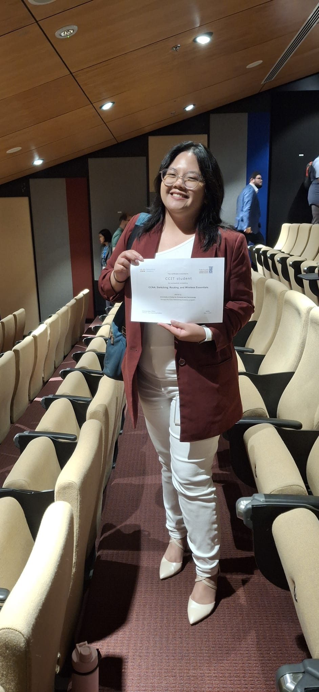

NETWORKING MILESTONE
Putting network knowledge into practice
Celebrating completion of Cisco Networking Academy's Switching, Routing, and Wireless Essentials course, offered through UDST.
See course certificate ↗IT Support / Networking / IoT & Web
A BS Information Technology graduate who enjoys turning complex technical challenges into reliable, people-first solutions — from enterprise device deployment to connected systems.
I'm an Information Technology graduate from the University of Doha for Science and Technology, with practical experience across enterprise IT support, network programming, Internet of Things systems, and web technologies.
At Primary Health Care Corporation, I configured and imaged 40+ workstations, supported users, and troubleshot hardware and software. At UDST, I helped students work through networking and IoT concepts with hands-on debugging.
I also led a QRDI-funded digital twin project, taking ownership of API and backend integration to connect its technical components. I care about clear documentation, dependable systems, and creating tech that's accessible to the people using it.
Read my résumé ↗From networking achievements to hands-on development, here's a glimpse of my journey.

Celebrating completion of Cisco Networking Academy's Switching, Routing, and Wireless Essentials course, offered through UDST.
See course certificate ↗A short coding video from my project journey, showing the hands-on side of learning, building and debugging.
Practical IT experience paired with a knack for teaching and supporting users.
University of Doha for Science and Technology
View degree certificate ↗APTECH · Doha, Qatar
Logic building, C programming and web fundamentalsFrom connected campuses to practical web tools. Select a card to explore the technical details.
Project summaries are drawn from my résumé. Selected projects include real demo links. Other repositories and demos will be linked when publicly available.
A selection of my completed courses, credentials, academic training and community contributions. Open any certificate to inspect the original.
I'm interested in IT support, network administration, cloud/IoT, and junior software or web roles. I'd be happy to connect.
Get in touch ↗